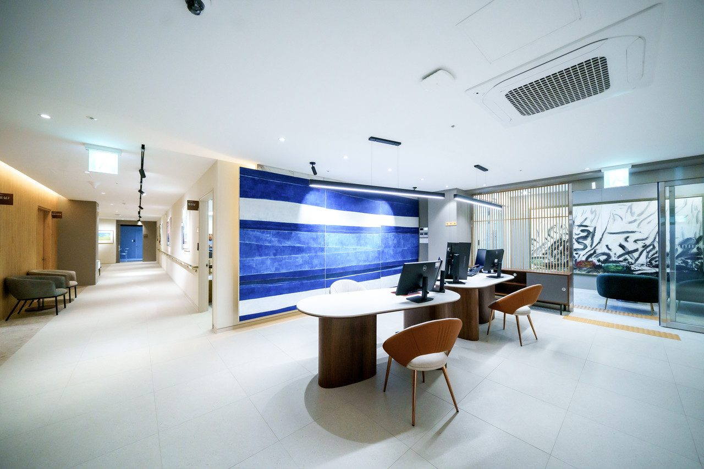
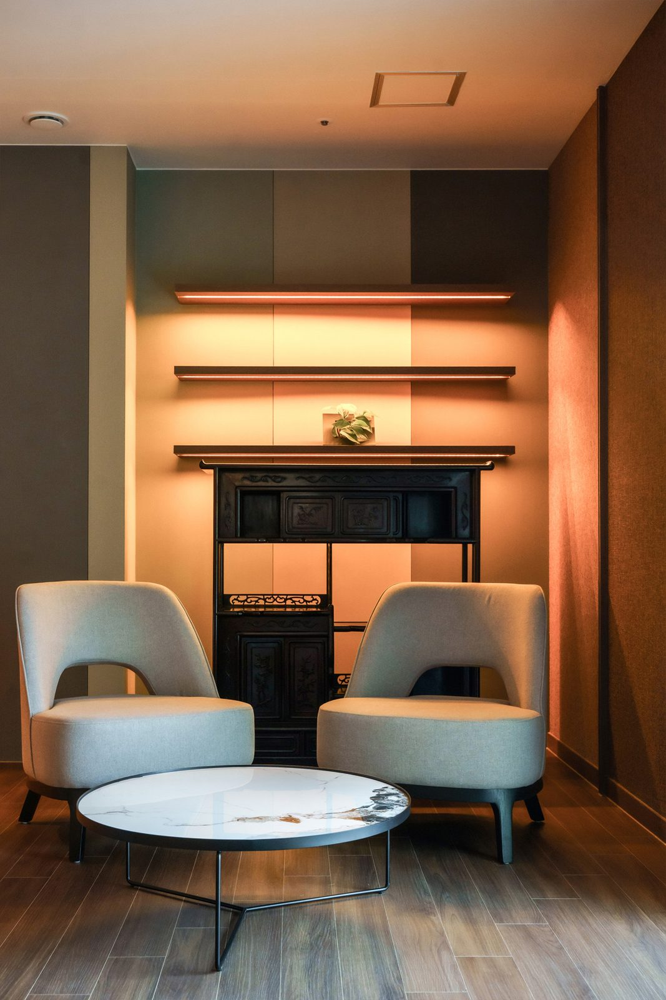

자주 묻는 질문
자주 묻는 질문입니다. 입원·외래 이용 안내를 중심으로 답합니다. 암 관련, 입퇴원 관련, 프로그램 관련, 비용 관련 순서로 모았습니다. 궁금한 점 있으시면 언제든 물어보세요.

- 분류
- 암 관련 · 입퇴원 관련 · 프로그램 관련 · 비용 관련
- 문의
- 원내 상담실 · 카카오톡 채널 · 062-439-1000
[디렉터 확인] 이 페이지를 고정 페이지(/inc/custom/faq.html)로 둘지 게시판(/board/fnq/)으로 둘지. 게시판 에디터는 script를 지워 문답 구조화 데이터를 넣을 수 없으므로 초안은 고정 페이지 주소로 적었습니다.
암 관련
항암 중에 요양병원에 꼭 가야 하나요?
하일렌요양병원은 전남광주 서구에 있는 암요양병원으로, 암 치료 과정의 회복을 돕는 곳입니다. 암 치료 자체는 현재 진료중인 대학병원에서 이어지고, 그 사이의 회복은 하일렌요양병원이 입원과 외래로 관리합니다. 입원과 외래 이용 여부는 지금 몸 상태에 필요한 치료를 기준으로 원내 상담실과 함께 정합니다. 자세한 안내는 단기입원·외래 안내에서 확인하실 수 있습니다.
입원하지 않고 외래로만 이용할 수 있나요?
외래 회복치료는 통원으로 이용할 수 있습니다. 외래 회복치료 7종은 단기입원·외래 안내에서 확인하실 수 있습니다. 외래 일정은 원내 상담실에서 안내합니다.
수술 부위는 누가 살피나요?
수술 부위 관리는 수술한 병원의 지침을 그대로 지켜 간호팀 및 주사·상처관리팀이 이어서 살핍니다. 상처, 배액관, 케모포트는 간호팀 및 주사·상처관리팀이 살핍니다. 암종별 안내는 암종별 회복 안내에서 확인하실 수 있습니다.
수술 후 식사는 어떻게 나오나요?
항암식부터 위절제식·저잔사식·저요오드식까지 환자 상태에 맞춘 치료식을 제공합니다. 식사에 대해 궁금한 점 있으시면 언제든 물어보세요. 입원 중 식사는 입원 안내에서 확인하실 수 있습니다.
암 수술 후 걷기는 얼마나 해야 하나요?
운동 범위는 주치의가 환자 상태를 보고 환자와 상담을 통해 결정합니다. 암재활 그룹 운동치료에는 걷기 운동 프로그램이 따로 없습니다. 자세한 안내는 암정보 도서관에서 확인하실 수 있습니다.
[디렉터 확인] 배액관을 단 채 입원할 수 있는지, 수술 부위 샤워 가능 시점, 치료식 단계를 올리는 기준은 의료진 확인이 끝난 확정 문장이 없어 문답에 넣지 않았습니다. 확정되면 추가합니다.
[디렉터 확인] 보호자 대상 문답(「암환자 보호자인데 너무 힘들어요」)은 보호자 축 콘텐츠 결정(8/24) 대기 상태라 넣지 않았습니다.
입퇴원 관련
입원할 때 어떤 서류가 필요한가요?
입원 서류는 입원 안내에서 확인하실 수 있습니다.
첫 항암을 받고 며칠 있어야 하나요?
하일렌요양병원의 단기입원은 1박 2일부터 치료 일정에 맞춰 이용할 수 있습니다. 단기입원 상담은 원내 상담실에서 안내합니다. 자세한 안내는 단기입원·외래 안내에서 확인하실 수 있습니다.
입원 중에도 지금 다니는 치료병원 외래를 계속 다닐 수 있나요?
입원 중 다른 병원 외래 진료에 필요한 진료의뢰서는 원내 주치의가 작성합니다. 자세한 안내는 단기입원·외래 안내에서 확인하실 수 있습니다. [디렉터 확인] 「입원 중에도 수술·항암을 받는 치료병원의 외래 일정은 그대로 이어가며」 구절의 원내 확정 여부(확정 기록은 진료의뢰서 작성까지, D2 결정 30번). 확정되면 단기입원·외래 안내와 같은 문장을 앞에 넣습니다.
보호자 면회는 언제 할 수 있나요?
면회 기준은 오시는 길·면회 안내에서 확인하실 수 있습니다.
밤에 아프면 누가 봐주나요?
야간 대응은 입원 안내에서 확인하실 수 있습니다.

[디렉터 확인] 입원 기간을 누가 어떤 시점에 정하는지의 확정 문장. 기간 숫자는 쓰지 않습니다.
[디렉터 확인] 보호자 없이 입원할 수 있는지와 원내 간병 체계의 확정 문장(보호자 동반 여부 포함).
[디렉터 확인] 외출·외박 문답(「외출·외박은 어떻게 되나요?」)의 게시 여부와 문장. 블로그 컨트롤타워 §4의 「외출·외박은 부득이한 경우만. 자주 필요하면 단기 집중 입원 또는 외래를 권한다」는 원내 운영 기준이고 게시 허가가 아니므로 확정 전에는 문답에 넣지 않았습니다. 확정되면 입원 안내와 같은 문장으로 맞춥니다.
프로그램 관련
프로그램은 누가 참여할 수 있나요?
입원 환자와 외래(통원) 환자 모두 참여할 수 있습니다. 입원 중이 아니어도 통원하시면서 참여하실 수 있습니다. 개인 상태에 따라 참여할 수 있는 프로그램이 다르므로 참여 전에 담당 의료진과 상의해 주세요. 자세한 안내는 프로그램 안내에서 확인하실 수 있습니다.
프로그램 신청은 어떻게 하나요?
신청과 문의는 카카오톡 채널 또는 병동 간호사실에서 받습니다. 일정은 병원 사정에 따라 달라질 수 있습니다. 자세한 안내는 프로그램 안내에서 확인하실 수 있습니다.
이달의 요일표는 프로그램 안내와 소식에서 확인하실 수 있습니다.
[디렉터 확인] 외래(통원) 환자의 프로그램 신청 창구를 「원내 상담실」로 적을지. 10월 공지 원문에는 「카카오채널 또는 병동 간호사실」만 있어 이 문장만 썼습니다. 확정되면 프로그램·소식 페이지와 같은 문장으로 맞춥니다.
비용 관련
하일렌요양병원 상급병실료는 하루 얼마인가요?
1일 기준으로 2인실 200,000원, 1인실 250,000원, 특실 300,000원, VIP실 350,000원입니다. 상급병실료는 건강보험이 적용되지 않아 전액 본인 부담입니다. 자세한 안내는 비급여·비용 안내에서 확인하실 수 있습니다.
고주파온열암치료 비용은 얼마인가요?
200,000원에서 350,000원 사이에서 정해집니다. 자세한 안내는 비급여·비용 안내에서 확인하실 수 있습니다.
진단서와 진료기록 사본 발급 비용은 얼마인가요?
진단서와 소견서는 각 10,000원, 입원·통원·진료확인서는 각 2,000원입니다. 진료기록 복사본은 1~5매까지 1매당 1,000원, 6매부터는 1매당 100원이며, 영상의학자료(CD) 사본은 1매 10,000원입니다. 자세한 안내는 비급여·비용 안내에서 확인하실 수 있습니다.
금액이 하나가 아니라 범위로 적힌 항목은 왜 그런가요?
용량·투여 횟수·치료 부위에 따라 실제 비용이 달라지는 항목이기 때문입니다. 예를 들어 메리트C 주사는 10g에서 100g까지 용량에 따라 30,000원에서 150,000원 사이입니다. 실제 청구 금액은 처방 확정 후 원무과에서 안내합니다. 자세한 안내는 비급여·비용 안내에서 확인하실 수 있습니다.
비급여 항목도 건강보험으로 처리되나요?
건강보험은 적용되지 않아 전액 본인이 부담합니다. 실제 청구 금액은 처방 확정 후 원무과에서 안내합니다. 자세한 안내는 비급여·비용 안내에서 확인하실 수 있습니다.
비급여 항목 전체와 기준일은 비급여·비용 안내에서 확인하실 수 있습니다.
[디렉터 확인] 「저출력 레이저 치료(림프부종) 비용은 얼마인가요?」 문답은 원무과 확인(D2 #33) 뒤에 비급여·비용 안내와 같은 문장으로 추가합니다. 확인 전까지 5문항으로 둡니다.
[디렉터 확인] 비급여 문답 5건의 금액이 비급여 페이지 표(2026-09-01 기준, 9/28 정정 5건 반영본)와 같은지 게시 전 대조.
[디렉터 확인] 보험 문답 3건을 이 페이지에 둘지 비대상으로 할지. ① 실손보험 보장 여부(9/28 문답 6번의 「실손의료보험 보장 여부는 가입한 보험 상품과 약관에 따라 다르므로 보험사에 직접 확인해야 합니다」 문장 포함) ② 본인부담상한액 환급과 실손이 겹치는 경우 ③ 보험사 입원 조사. 보험 정보 내부 한정 원칙과의 관계를 정리하기 전까지 문답에서 뺐습니다.
입원·외래·단기입원 상담은 원내 상담실에서 안내합니다. [디렉터 확인] 전화·카카오 응대 가능 시간, 부재중일 때 재연락 방식(D2 9-1 신설 행)
제공 하일렌요양병원 · 검토 [디렉터 확인] 검토 의료진(비급여 문답은 원무과 포함) · 검토일 [디렉터 확인] 검토일 · 출처 하일렌 발행정본 확정 표기(2026-08-20 병원 검수), 비급여 진료비용 안내(2026-09-01 기준), 2026년 10월 프로그램 공지, 하일렌 소식지 2026 여름호·가을호 · 갱신 2026-10-05